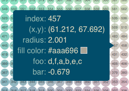

Configuring Plot Tools
Configuring Plot Tools¶
Bokeh comes with a number of interactive tools. There are three categories of tool interactions:
For each type of gesture, one tool can be active at any given time, and the active tool is indicated on the toolbar by a highlight next to to the tool icon. Actions are immediate or modal operations that are only activated when their button in the toolbar is pressed. Inspectors are passive tools that report information or annotate the plot in some way.
Positioning the Toolbar¶
By default, Bokeh plots come with a toolbar above the plot. In this section you will learn how to specify a different location for the toolbar, or to remove it entirely.
The toolbar location can be specified by passing the toolbar_location
parameter to the figure() function or to any bokeh.charts Chart function.
Valid values are:
"above"
"below"
"left"
"right"
If you would like to hide the toolbar entirely, pass None.
Below is some code that positions the toolbar below the plot. Try
running the code and changing the toolbar_position value.
from bokeh.plotting import figure, output_file, show
output_file("toolbar.html")
# create a new plot with the toolbar below
p = figure(plot_width=400, plot_height=400,
title=None, toolbar_location="below")
p.circle([1, 2, 3, 4, 5], [2, 5, 8, 2, 7], size=10)
show(p)
Specifying Tools¶
Tools can be specified by passing the tools parameter to the figure()
function or to any bokeh.charts Chart function. The tools parameter
accepts a list of tool objects, for instance:
tools = [BoxZoomTool(), ResetTool()]
Tools can also be supplied conveniently with a comma-separate string containing tool shortcut names:
tools = "pan,wheel_zoom,box_zoom,reset,resize"
However, this method does not allow setting properties of the tools.
To use shortcut names but also add tools with properties, one can
also call the add_tools method:
fig = figure(tools="pan,wheel_zoom,box_zoom,reset,resize")
fig.add_tools(BoxSelectTool(dimensions=["width"]))
Pan/Drag Tools¶
These tools are employed by panning (on touch devices) or left-dragging (on mouse devices). Only one pan/drag tool may be active at a time.
BoxSelectTool¶
- name:
'box_select' - icon:

The box selection tool allows the user to define a rectangular selection
region by left-dragging a mouse, or dragging a finger across the plot area.
The box select tool may be configured to select across only one dimension by
setting the dimensions property to a list containing width or
height.
Note
To make a multiple selection, press the SHIFT key. To clear the selection, press the ESC key.
BoxZoomTool¶
- name:
'box_zoom' - icon:

The box zoom tool allows the user to define a rectangular region to zoom the plot bounds too, by left-dragging a mouse, or dragging a finger across the plot area.
LassoSelectTool¶
- name:
'lasso_select' - icon:

The lasso selection tool allows the user to define an arbitrary region for selection by left-dragging a mouse, or dragging a finger across the plot area.
Note
To make a multiple selection, press the SHIFT key. To clear the selection, press the ESC key.
PanTool¶
{kind=link}
The pan tool allows the user to pan the plot by left-dragging a mouse or dragging a finger across the plot region.
It is also possible to constrain the pan tool to only act on either just the x-axis or
just the y-axis by setting the dimensions property to a list containing width
or height. Additionally, there are tool aliases 'xpan' and 'ypan',
respectively.
ResizeTool¶
{kind=link}
The resize tool allows the user to left-drag a mouse or drag a finger to resize the entire plot.
Click/Tap Tools¶
These tools are employed by tapping (on touch devices) or left-clicking (on mouse devices). Only one click/tap tool may be active at a time.
PolySelectTool¶
- name:
'poly_select' - icon:

The polygon selection tool allows the user to define an arbitrary polygonal region for selection by left-clicking a mouse, or tapping a finger at different locations.
Note
Complete the selection by making a double left-click or tapping. To make a multiple selection, press the SHIFT key. To clear the selection, press the ESC key.
TapSelectTool¶
- name:
'tap' - icon:

The tap selection tool allows the user to select at single points by clicking a left mouse button, or tapping with a finger.
Note
To make a multiple selection, press the SHIFT key. To clear the selection, press the ESC key.
Scroll/Pinch Tools¶
These tools are employed by pinching (on touch devices) or scrolling (on mouse devices). Only one scroll/pinch tool may be active at a time.
WheelZoomTool¶
- name:
'wheel_zoom','xwheel_zoom','ywheel_zoom' - icon:

The wheel zoom tool will zoom the plot in and out, centered on the current mouse location.
It is also possible to constraint the wheel zoom tool to only act on either
just the x-axis or just the y-axis by setting the dimensions property to
a list containing width or height. Additionally, there are tool aliases
'xwheel_zoom' and 'ywheel_zoom', respectively.
Actions¶
Actions are operations that are activated only when their button in the toolbar is tapped or clicked. They are typically modal or immediate-acting.
{kind=link}
PreviewSaveTool¶
{kind=link}
The save tool pops up a modal dialog that allows the user to save a PNG image of the plot.
Inspectors¶
{kind=link}
Inpectors are passive tools that annotate or otherwise report information about the plot, based on the current cursor position. Any number of inspectors may be active at any given time. The inspectors menu in the toolbar allows users to toggle the active state of any inspector.
CrosshairTool¶
- name:
'crosshair'
Th crosshair tool draws a crosshair annotation over the plot, centered on
the current mouse position. The crosshair tool may be configured to draw
accross only one dimension by setting the dimensions property to a
list containing width or height.
HoverTool¶
- name:
'hover'
The hover tool pops up a tooltip div whenever the cursor is over a glyph. The information comes from the glyphs data source and is configurable through a simple tooltips dictionary that maps displayed names to columns in the data source, or to special known variables
Below is some code that shows how to specify which tools to add to the toolbar.
Try running the code and changing the name of tools being added to the tools with valid values
from bokeh.plotting import figure, output_file, show
output_file("toolbar.html")
# Add hover to this comma-separated string and see what changes
TOOLS = 'box_zoom,box_select,crosshair,resize,reset'
# create a new plot with the toolbar below
p = figure(plot_width=400, plot_height=400, title=None, tools=TOOLS)
p.circle([1, 2, 3, 4, 5], [2, 5, 8, 2, 7], size=10)
show(p)
or with a list of the tool instances:
from bokeh.plotting import figure, output_file, show
from bokeh.models import HoverTool, BoxSelectTool
output_file("toolbar.html")
TOOLS = [BoxSelectTool(), HoverTool()]
p = figure(plot_width=400, plot_height=400, title=None, tools=TOOLS)
p.circle([1, 2, 3, 4, 5], [2, 5, 8, 2, 7], size=10)
show(p)
Setting Tool Visuals¶
Hover Tool¶
The hover tool is a passive inspector tool. It is generally on at all times, but can be configured in the inspector’s menu associated with the toolbar.
The hover tool displays informational tooltips whenever the cursor is directly over a glyph. The data to show comes from the glyph’s data source, and what is to be displayed is configurable through a tooltips attribute that maps display names to columns in the data source, or to special known variables.
Field names starting with “@” are interpreted as columns on the data source.
Field names starting with “$” are special, known fields, e.g. $x will
display the x-coordinate under the current mouse position. More information
about those fields can be found in the HoverTool reference.
Basic Tooltips¶
The hover tool will generate a default “tabular” tooltip of field names and their associated values. These field names and values are supplied as a list of (field name, value) tuples. For instance, the tooltip list below on the left will produce the basic default tooltip below on the right:
hover.tooltips = [
("index", "$index"),
("(x,y)", "($x, $y)"),
("radius", "@radius"),
("fill color", "$color[hex, swatch]:fill_color"),
("foo", "@foo"),
("bar", "@bar"),
]
|
 |
Here is a complete example of how to configure and use the hover tool with default tooltip:
from bokeh.plotting import figure, output_file, show, ColumnDataSource
from bokeh.models import HoverTool
output_file("toolbar.html")
source = ColumnDataSource(
data=dict(
x=[1, 2, 3, 4, 5],
y=[2, 5, 8, 2, 7],
desc=['A', 'b', 'C', 'd', 'E'],
)
)
hover = HoverTool(
tooltips=[
("index", "$index"),
("(x,y)", "($x, $y)"),
("desc", "@desc"),
]
)
p = figure(plot_width=400, plot_height=400, tools=[hover],
title="Mouse over the dots")
p.circle('x', 'y', size=20, source=source)
show(p)
Custom Tooltip¶
It is also possible to supply a custom tooltip template. To do this, pass an HTML string, with the Bokeh tooltip field name symbols wherever substitutions are desired. An example is shown below:
from bokeh.plotting import figure, output_file, show, ColumnDataSource
from bokeh.models import HoverTool
output_file("toolbar.html")
source = ColumnDataSource(
data=dict(
x=[1, 2, 3, 4, 5],
y=[2, 5, 8, 2, 7],
desc=['A', 'b', 'C', 'd', 'E'],
imgs = [
'http://bokeh.pydata.org/static/snake.jpg',
'http://bokeh.pydata.org/static/snake2.png',
'http://bokeh.pydata.org/static/snake3D.png',
'http://bokeh.pydata.org/static/snake4_TheRevenge.png',
'http://bokeh.pydata.org/static/snakebite.jpg'
]
)
)
hover = HoverTool(
tooltips="""
<div>
<div>
<img
src="@imgs" height="42" alt="@imgs" width="42"
style="float: left; margin: 0px 15px 15px 0px;"
border="2"
></img>
</div>
<div>
<span style="font-size: 17px; font-weight: bold;">@desc</span>
<span style="font-size: 15px; color: #966;">[$index]</span>
</div>
<div>
<span style="font-size: 15px;">Location</span>
<span style="font-size: 10px; color: #696;">($x, $y)</span>
</div>
</div>
"""
)
p = figure(plot_width=400, plot_height=400, tools=[hover],
title="Mouse over the dots")
p.circle('x', 'y', size=20, source=source)
show(p)
Selection Overlays¶
The capability to style the selection overlays is not yet exposed to the python interface. See issue 2239 for information about plans to add this feature.
Controlling Level of Detail¶
Although the HTML canvas can comfortably display tens or even hundreds of thousands of glyphs, doing so can have adverse affects on interactive performance. In order to accommodate large-ish (but not enormous) data sizes, Bokeh plots offer “Level of Detail” (LOD) capability in the client.
Note
Another option, when dealing with very large data volumes, is to use the Bokeh Server to perform downsampling on data before it is sent to the browser. Such an approach is unavoidable past a certain data size. See Deploying a Bokeh Server for more information.
The basic idea is that during interactive operations (e.g., panning or zooming),
the plot only draws some small fraction of data points. This hopefully allows the
general sense of the interaction to be preserved mid-flight, while maintaining
interactive performance. There are four properties on Plot objects that control
LOD behavior:
-
lod_factor¶ property type: lod_factor:Int
Decimation factor to use when applying level-of-detail decimation.
-
lod_interval¶ property type: lod_interval:Int
Interval (in ms) during which an interactive tool event will enable level-of-detail downsampling.
-
lod_threshold¶ property type: lod_threshold:Int
A number of data points, above which level-of-detail downsampling may be performed by glyph renderers. Set to
Noneto disable any level-of-detail downsampling.
-
lod_timeout¶ property type: lod_timeout:Int
Timeout (in ms) for checking whether interactive tool events are still occurring. Once level-of-detail mode is enabled, a check is made every
lod_timeoutms. If no interactive tool events have happened, level-of-detail mode is disabled.